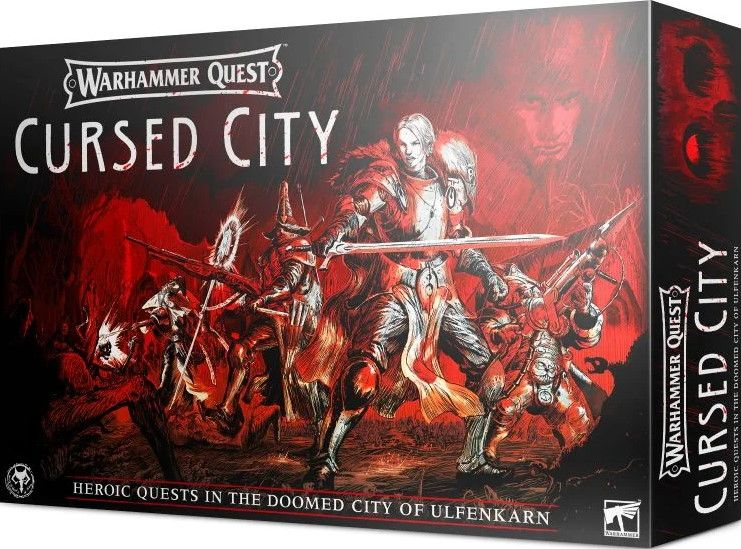

Warhammer Quest Cursed City
Warhammer Quest is a co-operative game that sees you and your friends take to the streets of the Cursed City of Ulfenkarn to fight the hordes of the undead. If you’ve played a Warhammer Quest game before, you’ll recognise the rules, but the mechanics have been updated to be more immersive and deadly.
Some time ago, Radukar the Wolf saved Ulfenkarn in its darkest hour, but his benevolence didn’t last. Claiming the Ebon Citadel, he surrounded himself with fiends, lackeys, and fellow creatures of the dark, forming his Thirsting Court. For a time peace reigned. Then came the Shyish Necroquake, and the Wolf found himself infused with dark power.
Sallying forth from his castle, Radukar and his court embarked on a murderous rampage. Some were deemed worthy of the Blood Kiss and were turned into vampires themselves – countless others were left as corpses strewn across the streets. The city now stands on the precipice of total doom. Are there any that would risk their lives and their very souls to save it?
In Warhammer Quest: Cursed City, you and your friends take on the role of a group of adventurers trying to lift the curse that has befallen the city of Ulfenkarn. Undead creatures stalk the streets.
Each player chooses one of eight heroes to play. The heroes come with their own, distinctly sculpted miniatures and background story.
Warhammer Quest: Cursed City is a campaign game in which the players must overcome a series of missions. With each mission, you will learn more about the curse and your nemesis.
Players roll dice at the beginning of their turn that they can turn into specific actions of the hero that they're playing. Only by working together and balancing their strengths and skills can the heroes hope to survive.
Contents
The game comes with 60 new miniatures, rulebooks, cards, tokens and more.
- Board Tiles: A modular board that can be rearranged to create different dungeon layouts.
- Hero Miniatures: Eight detailed miniatures representing the characters (Jolson Darrock, Qulathis the Exile, Emelda Braskov, Dasani Holdenstock, Glaurio Ben Allen III, Corona Zeitengale, Octren Glimscry and Briton Corpse–Eater).
- 5 Overlord Miniatures: Miniatures representing the Overlords (Gorslav the Gravekeeper, Watch Captain Halgrim, Torgillius the Chamberlain, Vyrkos Blood–born and Radukar the Wolf).
- Monster Miniatures: A variety of miniatures representing different monsters, such as zombies, skeletons, nightguard and more.
- 10 Objective marker model pieces.
- Rulebook: A comprehensive rulebook explaining the game mechanics, setup, and gameplay instructions.
- Quest Book: A book containing various quests and scenarios for players to undertake.